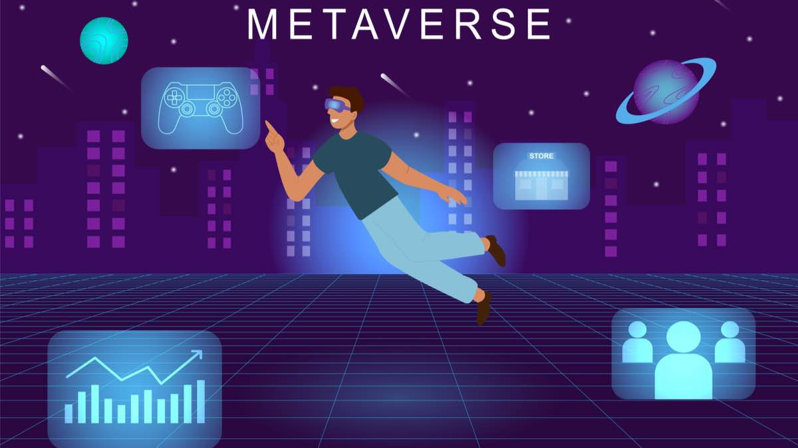
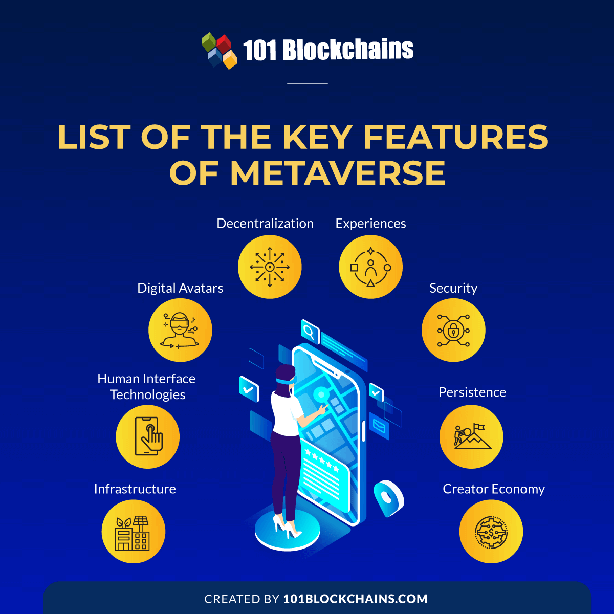

The Key features of Metaverse
With a social media giant and many other tech biggies such as Microsoft, NVidia, and Epic Games showing interest in metaverse, the interest in features of metaverse has obviously escalated in recent times. People would obviously express curiosity regarding the most noticeable traits of something which claims to be the next internet. What are the specific traits which drive the unique value propositions of the metaverse?

You can find the answer to this question by reflecting on the basic elements in the design of the metaverse. The features of the metaverse serve as the critical elements for ensuring that it delivers what it promised. Therefore, you can find a profound interplay between the metaverse traits and the functionalities it offers. Here is an outline of the notable features you can find in the metaverse.

1.Infrastructure
The foremost highlight in answers to “What is the key features of metaverse?” would draw the limelight towards infrastructure. In the case of metaverse, the infrastructure primarily refers to the technology infrastructure backing up the metaverse. The infrastructure includes connectivity technologies such as Wi-Fi, cloud computing, and 5G, alongside employing high-tech materials such as GPUs.
One of the staple highlights of the metaverse is that it would continue expanding. Therefore, the infrastructure for the metaverse must offer assurance for ultra-low latency, unbelievably fast speeds, and improved capacity. A strong infrastructure provides the foundation for seamless, value-based experiences for all users in the metaverse.
The emphasis on infrastructure as a key entry among metaverse features becomes clearly evident with examples of recent initiatives. The ICT Ministry of South Korea set the foundations for an industry alliance among 17 different companies and 8 different industry groups. With the objective of fostering development of the metaverse ecosystem, the industry alliance presents vital prospects for strengthening the metaverse infrastructure.
2. Digital Avatars
Another prominent highlight among the significant traits of metaverse refers to digital avatars. As a matter of fact, digital avatars are one of the focal elements in the metaverse design. Users can create digital avatars for expressing their emotions and feelings in the metaverse in an unconventional manner. You can use the metaverse features for creating digital avatars with personalization, thereby allowing you to take a digital replica of your favorite superhero.
Interestingly, the feature of creating and customizing digital avatars in the metaverse also opens up new prospects for gamification. As a result, digital avatars actually strengthen the basis for an interactive and immersive experience in the metaverse. Imagine the total internet user base of 4.66 billion creating their digital avatars and exploring the metaverse, sharing their knowledge, and interacting with other avatars. Truly a revolutionary experience, isn’t it?
3.Human Interface Technologies
Speaking of infrastructure as one of the key metaverse traits, one would obviously turn towards human interface technologies. Users can make the most of technologies such as VR headsets, haptics, AR glasses, and many other technologies for joining the metaverse.
The human interface technologies help in transporting users into the infinite immersive spaces of the metaverse. However, improvements in human interface technologies for the metaverse are underway. Smartphones, laptops, tablets, and PCs can also serve as access points to the metaverse when complemented with the right features.
4. Decentralization
The next prominent answer to “What is the key features of metaverse?” would point to decentralization. The vision of the metaverse paints it as an open, shared world where users can move seamlessly across platforms. Metaverse users could create their own virtual experiences and assets with economic value and trade them seamlessly without centralized authorities. This is where you would find decentralization as a notable feature of the metaverse.
Blockchain, edge computing, and artificial intelligence are some of the biggest technologies supporting democratization of the metaverse. With the help of decentralization, users can gain complete control and ownership over their assets and experiences in the metaverse. As a result, the decentralization trait of the metaverse plays a crucial role in determining the freedom of users. Therefore, the decentralization feature can easily distinguish the metaverse from the internet we see today.
4. Security
Well, there is no reason you can avoid security features in the metaverse. Cyber security has been one of the notable challenges for multiple companies worldwide. Therefore, the concerns of security also present detrimental issues for the metaverse. To address such concerns, the metaverse offers security features in the form of ethical and privacy standards in the ecosystem.
While the metaverse is still under development, the emphasis on security as one of the key metaverse traits cannot be overstated. The metaverse needs better standards of user protection and user identities. With many companies working on metaverse development, it is reasonable to point out the need for ethical behavior.
5. Experiences
The metaverse is practically just an open and empty virtual environment without experiences. The most profound highlight among key features of metaverse, i.e., the experiences help in transferring many physical experiences under a virtual roof. Most important of all, the metaverse promises to bring all physical and digital experiences under one roof.
For example, students and professionals could join shared learning and working spaces while collaborating remotely. Combining the different scattered experiences under one single environment presents the scope for more interactive user experiences in the metaverse. Teachers could take students on a field trip without actually traveling to the said location. On top of it, the experiences in the metaverse could also provide better prospects for hands-on practical learning.
6. Persistence
You would also note another significant highlight among metaverse features in the form of persistence. One of the common perceptions about the metaverse is that it is a VR world. You have to put on your VR headsets, and you can access the virtual world of the metaverse.
However, what happens when you take off the headset? Does the world in the metaverse stop there? No. As a matter of fact, the metaverse continues running even when you are plugged out. Think of it as playing an online multiplayer game where the other players continue playing the game, even if you are not there.
VR experiences are limited to the specific company or the brand offering the experience. On the contrary, the metaverse is an infinite open world that never rests, just like the real world. Therefore, persistence definitely stands out as one of the prominent highlights of the metaverse, making it available at all times.
7. Creator Economy
Above all the other features of metaverse, the creator economy takes first precedence when it comes to value. How will the metaverse serve value to the users? Well, games and all are surely fun to try out for some time. However, that does not give a favorable reason for buying expensive gadgets to participate in the metaverse. What about working and learning?
You could still access your Zoom meetings on your phone and collaborate in virtual workspaces with your laptops and PCs. The creator economy lets metaverse users access design tools for creating digital assets and experiences, which they can own and trade on marketplaces. Therefore, the creator economy is one of the prominent metaverse features showcasing its value for the future.
Conclusion :
The overall impression regarding the features of the metaverse suggests that the metaverse has been tailored as a revolutionary technological intervention. Science fiction and films have obviously painted vivid impressions of the metaverse and how it should look like. However, the features of metaverse help in bringing the vision of the metaverse to reality. You can clearly notice how the traits of the metaverse define its basic functionalities. As the metaverse grows further, it would include many other features. Learn more about the metaverse and explore the value it brings to the world with its features right now.
Thank you for reading ...